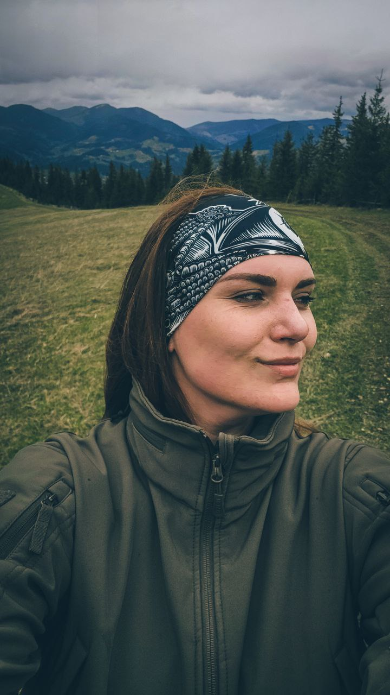

В основі ГО «Вшануй» лежить бачення Ірини «Чеки» Цибух — бойової медикині, журналістки та громадської діячки, яка вірила: пам’ять не може завершуватися похороном, меморіалом чи пам’ятною датою. Вона має жити в повсякденному житті суспільства, формувати його цінності й нагадувати про ціну свободи.
Для Ірини пам’ять була не лише про загиблих. Вона була про живих — про суспільство, яке не дозволяє людським життям перетворитися на статистику, а вдячності — залишитися лише словами. Саме навколо цієї ідеї почала формуватися команда «Вшануй».
Після загибелі Ірини у травні 2024 року її справу продовжила співзасновниця організації Катерина Даценко разом із командою однодумців. Сьогодні «Вшануй» розвиває ідею сучасної української культури пам’яті — відкритої, людяної та зрозумілої кожному.